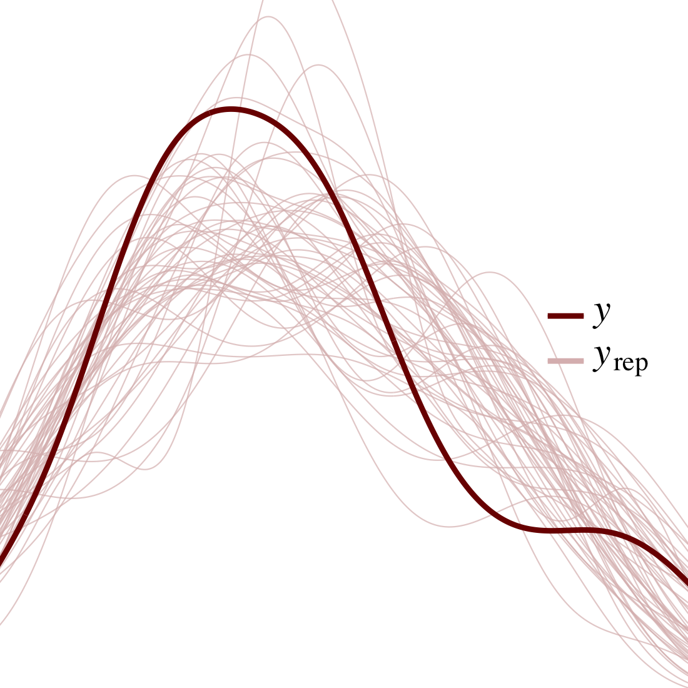

Home
Syllabus
Instructor
Labs
Software
Modules
Module 01
Module 02
Module 03
Module 04
Module 05
Module 06
Module 07
Module 08
Module 09
Module 10
Module 11
Module 12
Slides
Module 01 Slides
Module 02 Slides
Module 03 Slides
Module 04 Slides
Module 05 Slides
Module 06 Slides
Module 07 Slides
Module 08 Slides
Module 09 Slides
Module 10 Slides
Module 11 Slides
Module 12 Slides
Additional Resources
License
Preface

Preface
Introduction
Collecting Data from Social Media APIs
Scraping and Spidering the Web
Echo Chambers in Interaction and Discussion Networks (I)
Echo Chambers in Interaction and Discussion Networks (II)
Text Analysis - Qualitative and Quantitative Methods
Summarization, Thematic Analysis, and Topic Models (I)
Summarization, Thematic Analysis, and Topic Models (II)
Affect, Emotion, and Sentiment Analysis (I)
Affect, Emotion, and Sentiment Analysis (II)
Political Ideologies and Belief Networks (I)
Political Ideologies and Belief Networks (II)
On this page
Preface
Edit this page
Report an issue
View source
Author
John McLevey
Published
June 22, 2023
Modified
February 26, 2024
Preface
Connection to
@mclevey2022doing
…
This is a Manuscript in Progress
What to expect
How to give feedback
Everything is not fine with the way we teach and practice statistics in the sciences. We can all do better.
Everything is not fine with the way we teach and practice statistics in the sciences. We can all do better.